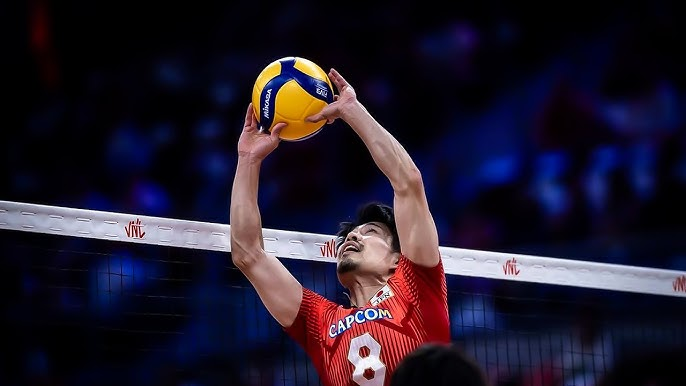
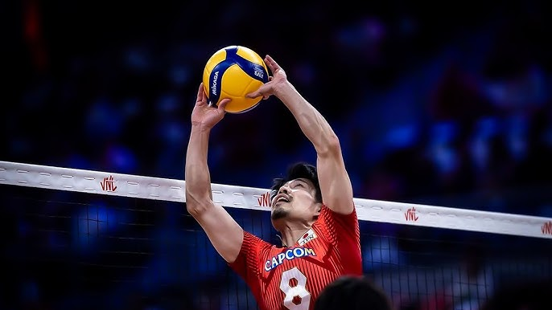
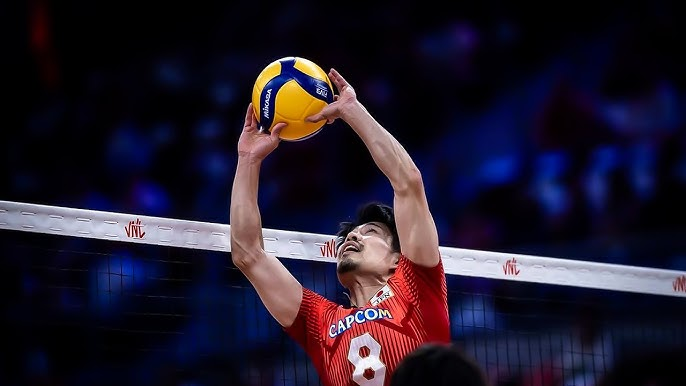

The setter’s job on the volleyball court is to run the offense by delivering accurate sets to hitters and making smart decisions under pressure. They need to communicate constantly, move quickly to the ball, and disguise their sets to keep the opponents guessing. In the back court, the setter defends from 1, and doesn't pass on serve recieve. They need to transition quickly to set from the front right, (inbetween 3 and 2). In the front court they defend from 2. Their job is to block the opposing outside hitter and run the offense. The setter is the red dot and they are blocking the opposing outside hitter. They will then need to transition to the setters spot (as shown with the arrow) and set the ball.
